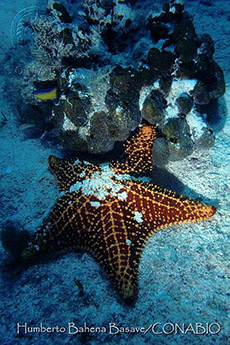
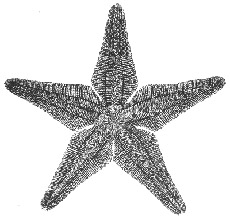
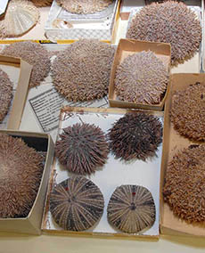

Referencias
- Boletín del Instituto de Ciencias del Mar y Limnología. Julio-Septiembre 2009. No. 1.
- Ramírez, J.M.C. 2007. Biblioteca “Dra. María Elena Caso Muñoz”. Instituto de Ciencias del Mar y Limnología, Unidad Académica Mazatlán, UNAM.
- Rogelio, Á.J. 1987. Enciclopedia de México. Secretaría de Educación Pública, México
María Elena Caso Muñoz
1915 – 1991
María Elena Caso Muñoz fue una destacada bióloga que inició una nueva época en el estudio de estrellas de mar, ofiuras, pepinos y erizos de mar (equinodermos) en México. Nació en la ciudad de México en 1915 y falleció en 1991.
Estudió biología en la Facultad de Ciencias de la UNAM donde más tarde obtuvo el grado de Maestra en Ciencias Biológicas con sus tesis “Contribución al conocimiento de los Astéridos de México” (1943). Posteriormente, en 1961 se tituló doctora en esta misma rama con el trabajo “Los equinodermos de México”.
Fue cofundadora del Laboratorio de Hidrobiología en el Instituto de Biología de la UNAM, del cual surgió más tarde el Instituto de Ciencias del Mar y Limnología (ICML) de dicha institución.
Su producción científica consiste en alrededor de 60 trabajos que abarcan los principales grupos de equinodermos, lo cual representa la obra más importante y completa que se conoce sobre esta especialidad en nuestro país. Se interesó en la docencia y enseñó zoología de invertebrados, invertebrados marinos, biogeografía marina e hidrobiología marina en la Facultad de Ciencias de la UNAM.
En el periodo de 1950 a 1956, a petición de la Gerencia de Exploración de Petróleos Mexicanos, trabajó como asesora en el Laboratorio de Paleontología. De ahí derivó su trabajo sobre “Los equinoideos fósiles del Cenozoico de México”.
A lo largo de sus exploraciones por las costas mexicanas del Atlántico y Pacífico, describió numerosas especies no conocidas anteriormente de estos animales. Esta actividad la llevó a formar una vasta colección científica de equinodermos que consta de ejemplares nacionales y extranjeros. Actualmente los ejemplares forman parte de la Colección Nacional de Equinodermos “Dra. Ma. Elena Caso Muñoz” del ICML de la UNAM.
Mis favoritos
- 
- Estrella de mar (Oreaster reticulatus)
- Foto: Humberto Bahena Basave / Banco de imágenes, CONABIO
Mis lugares
Mis ideas
- 
- El estado actual del estudio de los equinodermos de México
María Elena Caso Muñoz. Anales del Centro de Ciencias del Mar y Limnología - 
- Colección Nacional de Equinodermos María Elena Caso Muñoz del ICMyL de la UNAM